Morphora grew out of a simple observation. Many workstations, synthesizers and sound modules can play several parts at the same time, but real-time keyboard performance often uses only one sound or a simple layer of two sounds. The multitimbral capacity of the instrument therefore remains largely unused unless it is driven by a sequencer.
Morphora was created to make that capacity playable in real time. It turns a single keyboard performance into an expressive combination of several sounds whose relative contribution changes continuously with keyboard position and playing dynamics.
Morphora is a MIDI performance processor. It receives notes, velocity, sustain, pitch-bend and pressure data from one selected MIDI input channel and controls up to sixteen output tracks on a selected MIDI output device.
The sixteen output tracks are organized through eight intermediate processing paths called Morph Outputs. Each output track is assigned to one Morph Output. A Morph Output may contain one track, several tracks, or no tracks.
For every played note, each Morph Output receives a dynamic gain between 0 and 1. The gain is calculated from:
A play zone is a region of the two-dimensional performance space whose horizontal axis is MIDI note number and whose vertical axis is velocity. Low notes, high notes, soft notes and loud notes are play zones. Combined regions such as low and loud, high and soft, or middle-register mezzo-piano notes are play zones as well.
Morphora uses eight principal play zones, represented by the following Morph Outputs:
| Morph Output | Controlled by | Maximum contribution toward |
|---|---|---|
| Low | Note | Lower register |
| Low and Loud | Note and velocity | Lower register, loud dynamics |
| Loud | Velocity | Loud dynamics |
| High and Loud | Note and velocity | Upper register, loud dynamics |
| High | Note | Upper register |
| High and Soft | Note and velocity | Upper register, soft dynamics |
| Soft | Velocity | Soft dynamics |
| Low and Soft | Note and velocity | Lower register, soft dynamics |
For example, the Loud gain approaches 0 when a note is played softly and approaches 1 when it is played loudly. The High gain is low in the lower register and high in the upper register. Low and Soft responds to both axes and is strongest for low, softly played notes.
All tracks assigned to the same Morph Output share its gain for the current note. Morphora sends the resulting MIDI data to the assigned output tracks; the target instrument or sound module generates and mixes the audio.
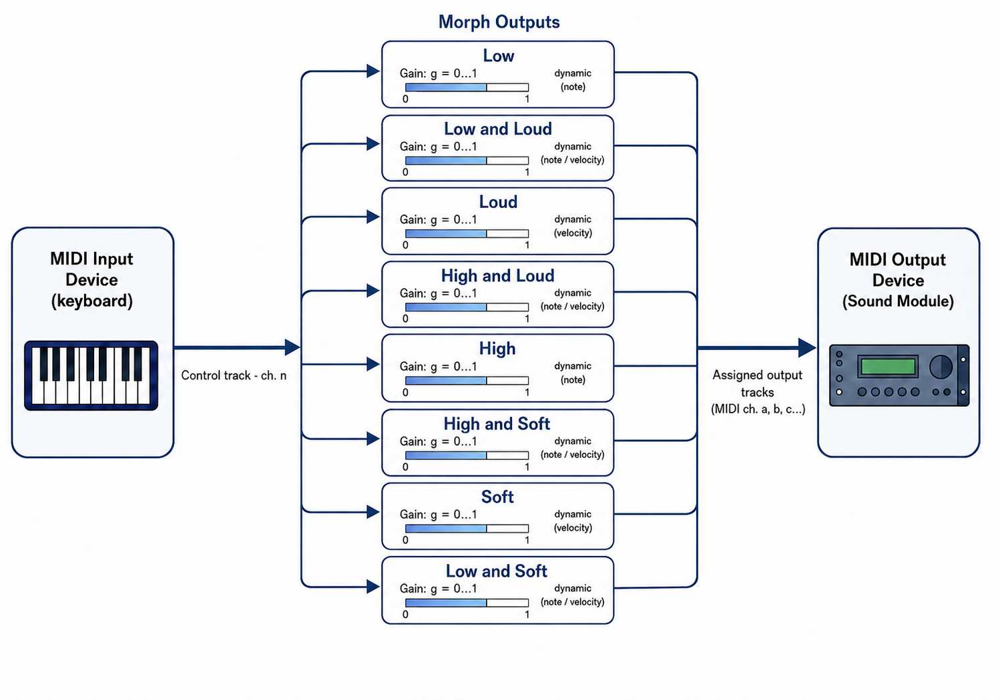
In Morphora, a track is a logical sound-producing part controlled by the application, while a channel is the MIDI channel used to communicate with that part. The mapping is fixed and direct:
The MIDI input channel is selected independently and may be any channel from 1 to 16.
Morphora is intended for users who are already familiar with basic multitimbral MIDI configuration, including MIDI channels, Local Off, Bank Select and Program Change. When a term depends on a particular instrument, consult that instrument's MIDI documentation.
Before using Morphora, configure the sending keyboard and the receiving sound engine on the devices themselves. Morphora can select ports, programs and several MIDI parameters, but it cannot create a multitimbral setup on a remote instrument that does not already provide one.
You need:
The control track should normally be set to Local Off, or to the equivalent setting provided by the instrument. It should send notes to Morphora without directly playing the instrument's internal sound engine.
If the control track also produces sound locally, that unprocessed sound will be heard together with the tracks controlled by Morphora and may mask the morphing effect.
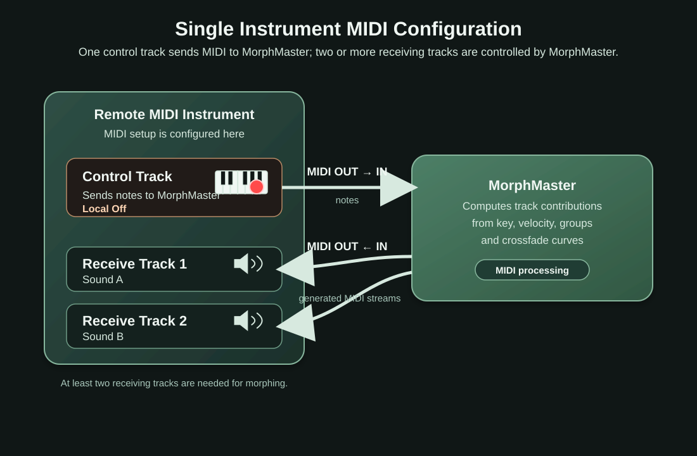
The MIDI input and output devices do not need to be the same instrument. A master keyboard may provide the control track while a separate workstation, synthesizer or sound module provides the receiving tracks and audio generation.
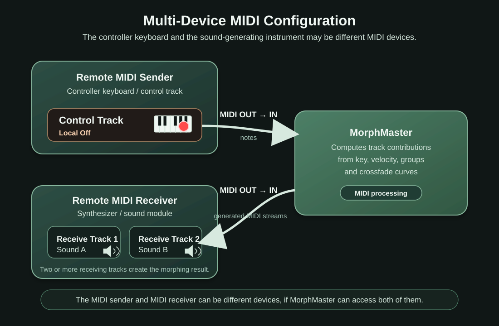
Although Morphora always uses the same continuous morphing engine, the musical objective may be very different. In some cases, the goal is to create a single expressive instrument with a unique personality. In others, it is to create the impression of an ensemble that follows a single musical gesture. The following sections describe these two complementary design approaches.
Create a single expressive instrument whose timbre evolves naturally with pitch and playing dynamics.
Instead of layering instruments or switching between them at predefined split points, Morphora continuously combines different sound sources. The performer experiences a single coherent instrument, while different instruments contribute where they are most effective.
The listener perceives a single keyboard instrument with an unusually rich and expressive character, rather than three separate sounds.
The more successful the design, the less attention it draws to the fact that multiple instruments are involved.
Create the impression of an ensemble controlled by a single performer.
Each Morph Output drives a different instrument, but transitions are continuous rather than based on fixed keyboard splits or velocity thresholds.
The performer plays naturally, while the ensemble adapts to register and dynamics.
Additional Morph Outputs may reinforce the overall timbre without being perceived as distinct instruments.
The result is not a conventional layered setup, but an ensemble that breathes with the musical gesture.
Traditional keyboard setups often require decisions such as:
These techniques inevitably introduce audible or perceptual boundaries.
Morphora removes those boundaries by making every transition continuous.
The performer no longer has to think about where one sound ends and another begins: the musical gesture itself determines the resulting timbre.
The vertical navigation rail on the left provides direct access to the main pages:
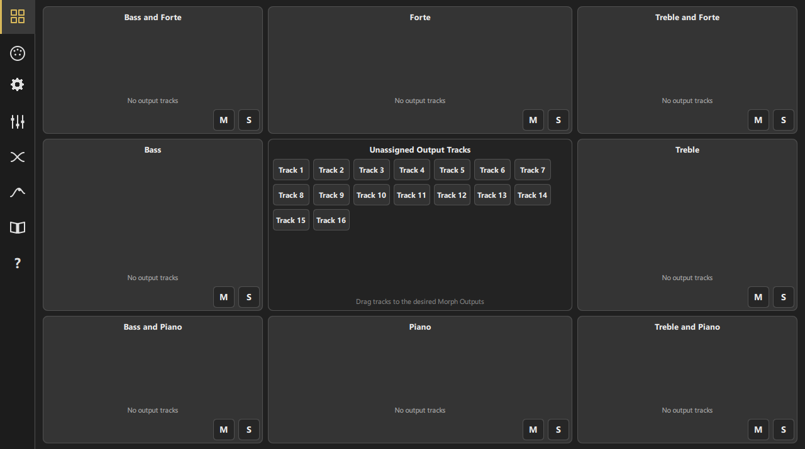
| Area | Phone | Tablet/Desktop |
|---|---|---|
| MIDI and Settings | Two separate pages | Combined page with Configuration Overview |
| Tracks | One track per page | Four tracks per page in a 2×2 grid |
| Morph Curves | One curve per page | Both curves and four corner surfaces together |
| Keyboard | Six pages of 28 notes | Fixed or range-adapted keyboard, one or two rows |
When a page has multiple subpages, previous and next arrows appear in the page header.
Most editable numeric fields support two input methods. Drag a finger or pointer upward or to the right to increase the value, and downward or to the left to decrease it. For direct entry, long-press the field to open a numeric keypad and type the required value. The permitted range of the control still applies.
The eight Morph Outputs are arranged around a central Unassigned Output Tracks pool. Their positions follow the note/velocity performance space:
| Low and Loud | Loud | High and Loud |
| Low | Unassigned Output Tracks | High |
| Low and Soft | Soft | High and Soft |
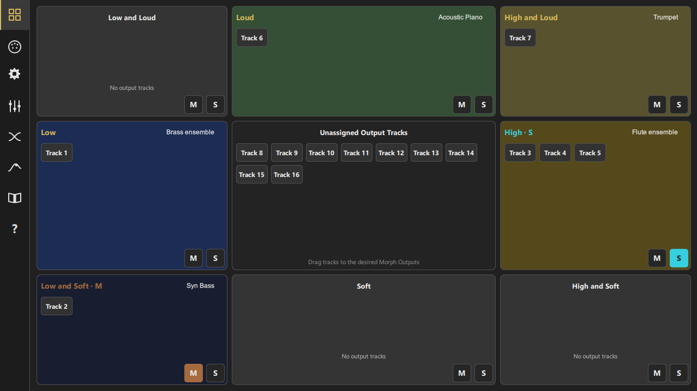
To remove an assignment, drag the tile back to the central Unassigned Output Tracks panel. A track can belong to only one Morph Output at a time, while a Morph Output can contain multiple tracks.
On phone layouts, compact track tiles show only the track number. On larger layouts they show “Track” followed by the number.
Long-press an assigned track tile to open the corresponding Track page. Long press is intentionally disabled in the Unassigned Output Tracks pool because an unassigned track has no active sound configuration in the performance routing.
Each Morph Output has a fixed generic name, such as Low, Soft or High and Loud, and may also be given a user-defined name. A descriptive name such as “piano”, “strings” or “brass layer” makes the purpose of the output easier to recognize in Morph Monitor than the track list alone. Morph Output names are stored in the preset.
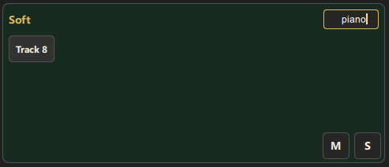
Each Morph Output has two dedicated buttons on the Morph Output Assignment page:
Normal, Muted and Soloed are mutually exclusive states. When one or more Morph Outputs are Soloed, only those outputs remain active.
The same three states can also be selected by tapping the generic Morph Output name. Each tap cycles through Normal → Muted → Soloed → Normal. A muted output shows an M suffix and a soloed output shows an S suffix beside its generic name. This name-tap control and the M/S status indication are available both in Morph Output Assignment and in Morph Monitor, so the state can be checked or changed without switching pages. Mute and Solo states are stored in presets.
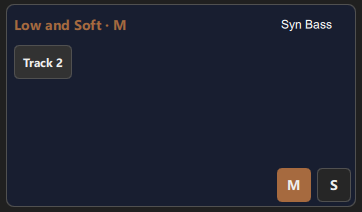
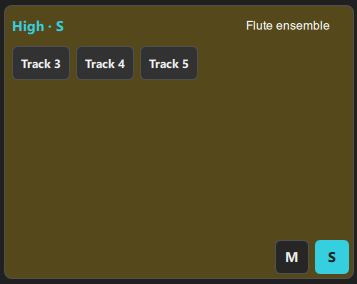
In tablet and desktop profiles Midi settings, Performance, Presets and Configuration overview are displayed in a single page.
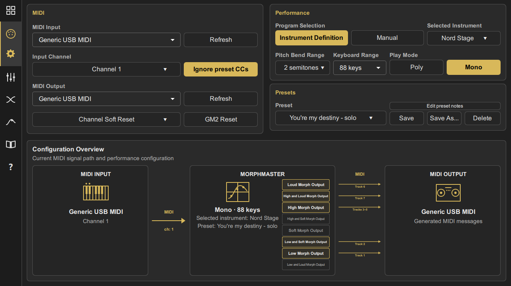
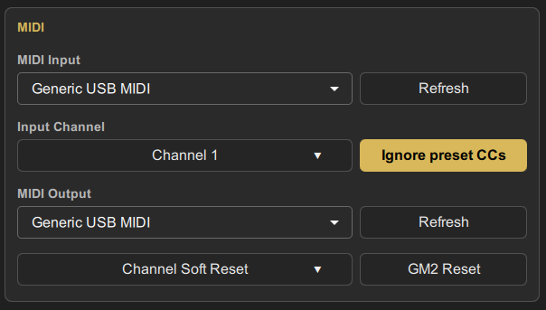
Select the device that sends the control-track performance to Morphora. Press Refresh after connecting or disconnecting a device if the list is not updated automatically.
Use Input Channel to select the MIDI channel used by the control track. Morphora listens to that channel and ignores note data received on other channels.
Some Control Change messages correspond to values that are already part of the Morphora track setup, including Volume, Pan, Reverb, Chorus, Harmonic Content and Brightness. Incoming versions of these messages can be useful when the control track is driven by a recorded MIDI sequence. For example, a fade-out recorded as Volume CC7 should be replicated on the Morphora output tracks so that the transformed performance follows the same fade-out.
However, these incoming controllers may conflict with the values stored in the preset. The Ignore Preset CCs option therefore determines whether setup-related CCs received on the input channel are discarded or forwarded to the assigned output tracks. Leave it enabled to protect the preset setup; disable it only when the incoming sequence is intentionally expected to control those parameters.
Expression CC11 is a special case. It can be forwarded in Poly mode when Ignore Preset CCs is disabled, but it is never forwarded in Mono mode because Morphora uses CC11 internally to perform the Morph Output crossfades. The complete forwarding rules are listed in Chapter 11.
Select the device that contains the receiving parts or tracks. Morphora sends Track 1 to output channel 1, Track 2 to channel 2, and so on through Track 16/channel 16.
Press the output Refresh button after changing the connected MIDI devices.
Sends the standard General MIDI 2 Reset SysEx message to the selected output device. Because the reset also restores registered parameters, Morphora reapplies its channel fine tuning and Pitch Bend Range settings afterward.
Opens a 4×4 channel selector. Choosing a channel sends Sustain Off, All Notes Off and Reset All Controllers to that channel, then reapplies the track tuning and Pitch Bend Range. Use it when one channel needs to be recovered without resetting the entire sound module.
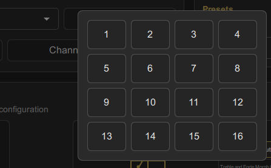
Morphora offers two program-selection modes.
Select a supported instrument from the database. Each Track editor then provides an instrument-program browser containing the complete set of programs available in that instrument definition. Morphora uses the selected entry to send the required Bank Select and Program Change values automatically.
Each Track editor provides Bank MSB, Bank LSB and Program controls. The Program list displays the 128 General MIDI program names as a reference; the actual sound depends on the selected bank and on the target instrument.
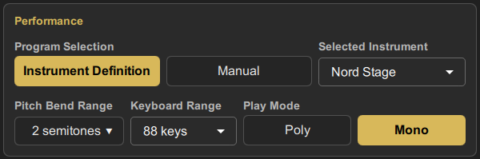
Sets the pitch-bend sensitivity from 0 to 24 semitones. Morphora sends the value to assigned output tracks using RPN 0,0 and forwards incoming Pitch Bend messages to those tracks.
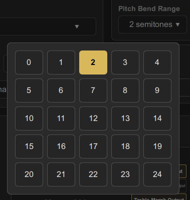
Keyboard Range defines the note interval used by the Low/High curve and by the range-adapted Keyboard view.
| Selection | MIDI notes |
|---|---|
| Full | 0–127 |
| 88 keys | 21–108 |
| 76 keys | 28–103 |
| 73 keys | 24–96 |
| 61 keys | 36–96 |
| 49 keys | 36–84 |
| 37 keys | 48–84 |
| 25 keys | 48–72 |
Select Poly for polyphonic playing or Mono for last-note-priority monophonic playing. The detailed behavior is described in the Performance Behavior chapter.
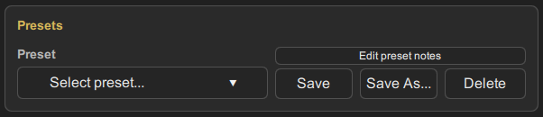
A preset stores the complete Morphora performance configuration, including:
Save and Delete are disabled when no preset is selected. Selecting a preset recalls it immediately and releases currently sounding notes before applying the configuration.
The complete track setup is transmitted every time a preset is selected, even when it is the preset that is already current. Reselecting the current preset can therefore be used as a convenient refresh command to resend its Bank Select, Program Change, mixer, effects, timbre, tuning and related setup messages to the output device.
A Morphora preset often depends on companion operations that must be performed on the remote keyboard or sound module and cannot be carried out by Morphora itself. Each preset can therefore contain free-form notes that serve as a setup reminder.
Typical notes may specify which control track must be set to Local Off, which tracks or zones must be prepared on the instrument, whether an insert effect must be enabled, and which MIDI input and output settings on the remote device must correspond to the Morphora configuration.
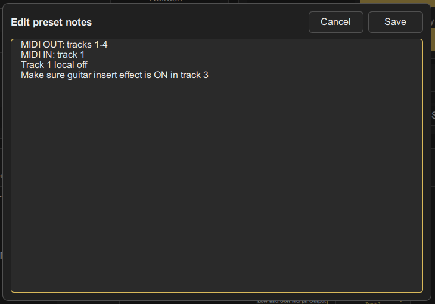
On tablet and desktop layouts, the lower part of MIDI and Settings shows the current signal path: input device and channel, Morphora performance settings, Morph Output assignments and output device. Only Morph Outputs containing tracks show active outgoing lanes.
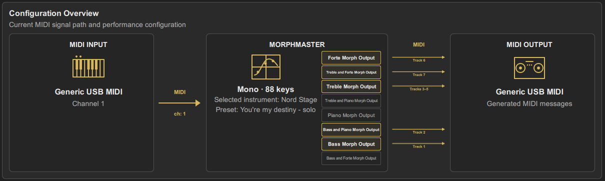
Morphora provides sixteen output tracks. Tablet and desktop layouts show four at a time in pages 1–4, 5–8, 9–12 and 13–16. The phone layout shows one track at a time.
A track becomes active only after it is assigned to a Morph Output. When Assigned Morph Output is set to None, all other controls are disabled.
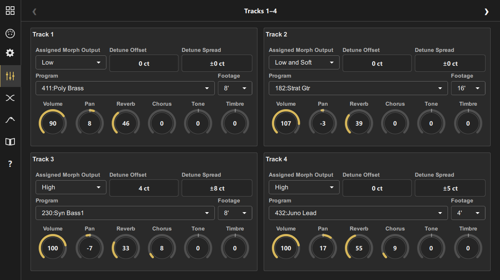
Use this selector to assign the track directly without returning to the Assignment page. The available values are None and the eight Morph Outputs. Long-press the selector to open Morph Output Assignment.
Detune Offset applies a fixed per-track tuning adjustment from −50 to +50 cents. It is added to the fine-tuning correction required by the selected Footage.
The Detune Spread control introduces a controlled amount of pitch variation around the track's Detune Offset value. Its purpose is to make the tuning less mechanically exact and more similar to the small intonation variations found in acoustic instruments.
The detune value is calculated and sent at the beginning of each musical phrase. Once selected, it remains unchanged until the phrase ends. A new value is then calculated at the beginning of the following phrase. This behaviour is the same in both Poly and Mono play modes.
The result is partly random and partly influenced by the velocity of the note that begins the phrase. Higher velocities tend to produce values in the upper part of the available detune range, while lower velocities tend to produce values in its lower part. The result nevertheless remains random, so repeated phrases played at the same velocity do not necessarily receive exactly the same detuning.
Open the Program control to display a browser containing the programs available for the currently selected instrument definition. When the browser opens, it shows the complete list and the total number of available programs. If a program is already selected, it remains visible in the Current program area and the list is positioned around its entry whenever possible.
Use Search name… to filter the list by program name. The search accepts multiple words: only entries containing all the entered words are shown, regardless of their order in the program name. Use Program # to find every entry that uses a particular MIDI Program number, including matching programs in different banks. The result counter shows the number of matching entries and the total number of programs in the instrument definition.
Selecting an entry closes the browser and Morphora automatically sends the Bank Select and Program Change values defined for it.
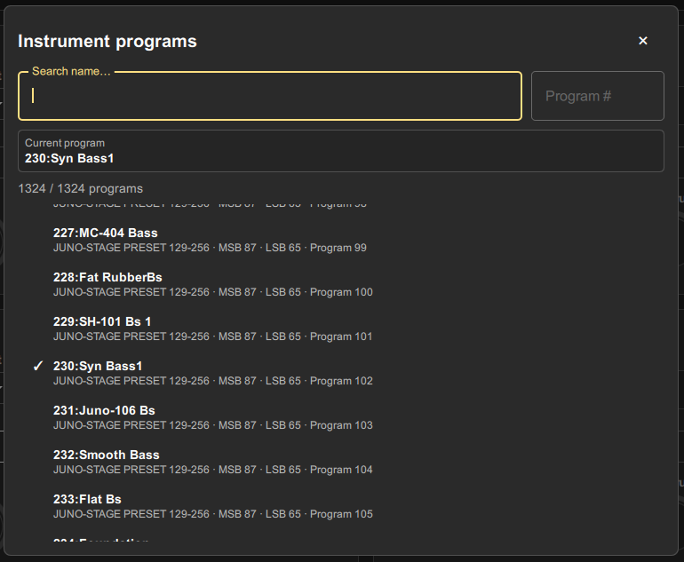
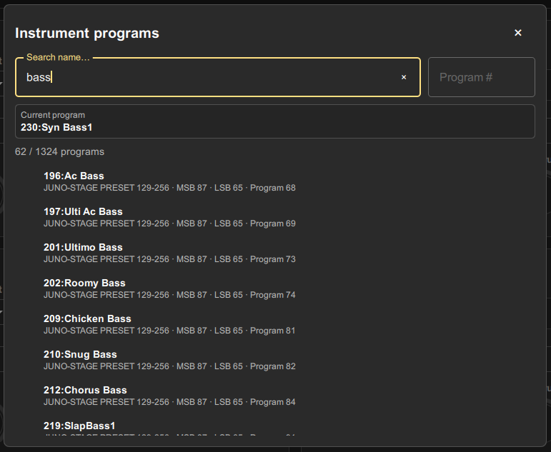
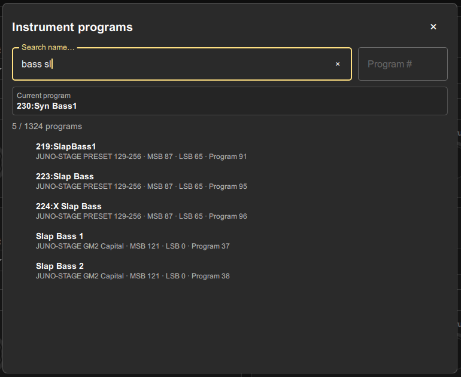
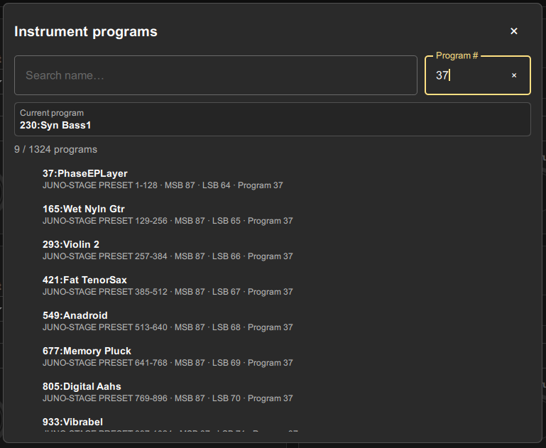
Enter Bank MSB and Bank LSB, then select a Program. Changing the Program sends the complete bank/program sequence to the track's MIDI channel.
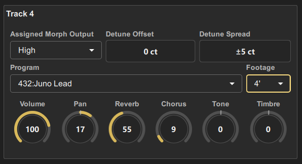
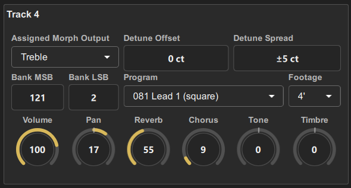
Footage transposes a track to a harmonic interval inspired by pipe-organ ranks and drawbar organs. Non-octave footage values also include the cents correction required for the corresponding natural harmonic.
At first sight, the Footage control may appear unrelated to the morphing concept described in the previous sections. In reality, it is fully consistent with Morphora's goal of helping musicians explore sounds and timbral combinations that would be difficult or impossible to create on most MIDI keyboards.
The Footage control is inspired by the tradition of pipe organs and drawbar organs such as the Hammond. In these instruments, a complex sound is created by combining multiple components at different harmonic intervals.
In a pipe organ, the components are individual ranks of pipes. In a drawbar organ, they are generated by separate oscillators. In Morphora, the components are the individual tracks and the sounds assigned to them.
This makes it possible to build original timbres using an additive synthesis approach, where different programs are combined at harmonic intervals relative to a fundamental sound.
| Footage | Semitone transposition | Fine tuning |
|---|---|---|
| 16' | −12 | 0 cent |
| 8' | 0 | 0 cent |
| 5 1/3' | +7 | +2 cent |
| 4' | +12 | 0 cent |
| 2 2/3' | +19 | +2 cent |
| 2' | +24 | 0 cent |
| 1 3/5' | +28 | −14 cent |
| 1 1/3' | +31 | +2 cent |
| 1 1/7' | +34 | −31 cent |
| 1' | +36 | 0 cent |
For example, try combining:
The resulting timbre is often surprising and can be quite different from any of the individual sounds used to create it.
The real power of the Footage control emerges when it is combined with Morphora's morphing engine.
For example, imagine creating a custom additive timbre using the three tracks described above and assigning them to the High morph output. Then assign a Brass Ensemble sound to the Low morph output.
When playing in the lower register, the Brass Ensemble will dominate the sound. As notes move towards the upper register, the contribution of the Brass Ensemble gradually decreases while the custom additive timbre becomes increasingly prominent.
The result is not merely a transition between two preset sounds, but a continuous evolution between fundamentally different sound structures. This combination of additive sound design and real-time morphing is one of the most distinctive features of Morphora.
The combined fine tuning from Footage, Detune Offset and Detune Spread is limited to ±100 cents and is sent as Channel Fine Tuning RPN 0,1.
| Control | Range | MIDI behavior |
|---|---|---|
| Volume | 0–127 | CC7 |
| Pan | −64…+63 | CC10, centered at 64 |
| Reverb | 0–127 | CC91 |
| Chorus | 0–127 | CC93 |
| Tone | −64…+63 | Expressive modulation amount used to calculate MIDI CC71 |
| Timbre | −64…+63 | Expressive modulation amount used to calculate MIDI CC74 |
Volume, Pan, Reverb and Chorus are sent directly when their values are changed. Tone and Timbre behave differently: the values shown in Track Settings are not sent directly as MIDI CC values.
Instead, Morphora combines each track's Tone and Timbre settings with the current Expression value. The resulting values are calculated dynamically and sent respectively as MIDI CC71 and CC74. This produces a more natural expressive response, because the tonal change follows the evolution of the played phrase rather than remaining fixed at the value selected in Track Settings.
A value of 0 is neutral. Positive and negative values determine the direction and amount of the contribution applied by the expressive calculation.
These controls form part of the preset's track setup. When the input source is a recorded MIDI sequence, equivalent incoming CC messages can optionally be replicated on all assigned output tracks by disabling Ignore Preset CCs. This is useful for recorded automation, but it should be enabled consciously because the incoming data may conflict with the setup stored in the preset. See Chapter 11 for the exact forwarding rules.
Morphora uses two global curve pairs for the entire preset:
Tracks no longer select individual curve numbers. Their Morph Output determines which global curve or combination of curves is used.
Each editable response is defined by two points: `(x1, y1)` and `(x2, y2)`.
For the note curve, X follows the selected Keyboard Range. For the velocity curve, X always ranges from 0 to 127.
The curves themselves are not dynamically modified during performance. Each curve is defined by two control points. Outside the interval between those points the response is horizontal, while the transition between them follows an equal-power quarter-sine or quarter-cosine shape.
During performance, Morphora evaluates the Low/High curve using the MIDI note number and the Soft/Loud curve using Note On velocity. The resulting values determine the gain components applied to the Morph Outputs. For corner Morph Outputs, the keyboard-position and velocity components are combined to obtain the final gain.
For corner Morph Outputs, the final normalized gain is calculated as: gain = keyboard gain × velocity gain.
The graph displays two complementary equal-power gains. One is derived with a sine response and the other with the corresponding cosine response. This provides a smoother perceived crossfade than a pair of simple linear amplitude ramps.
The two handles belong to the primary curve. Move them directly on the graph, or edit x1, y1, x2 and y2 with the numeric drag fields.
The four corner Morph Outputs use both global curves. For the side Morph Outputs, gain depends on only one performance variable: MIDI note position for Low and High, or Note On velocity for Soft and Loud. Their response can therefore be represented by a one-dimensional curve, such as
The corner Morph Outputs depend on both variables simultaneously. Their gain is therefore a two-variable function
where the Low/High curve provides the keyboard-position component and the Soft/Loud curve provides the velocity component. These two components act along orthogonal axes and are combined to produce the final gain.
In the current implementation, the normalized corner gain is calculated as
The resulting function is naturally represented as a three-dimensional surface, with note position and velocity on the two horizontal axes and gain on the vertical axis.
On tablet and desktop, four small 3D graphs show these surfaces for Low and Soft, Low and Loud, High and Soft, and High and Loud. They make it possible to see how the two global curves interact and how the gain rises or falls across the complete note-position and velocity plane.
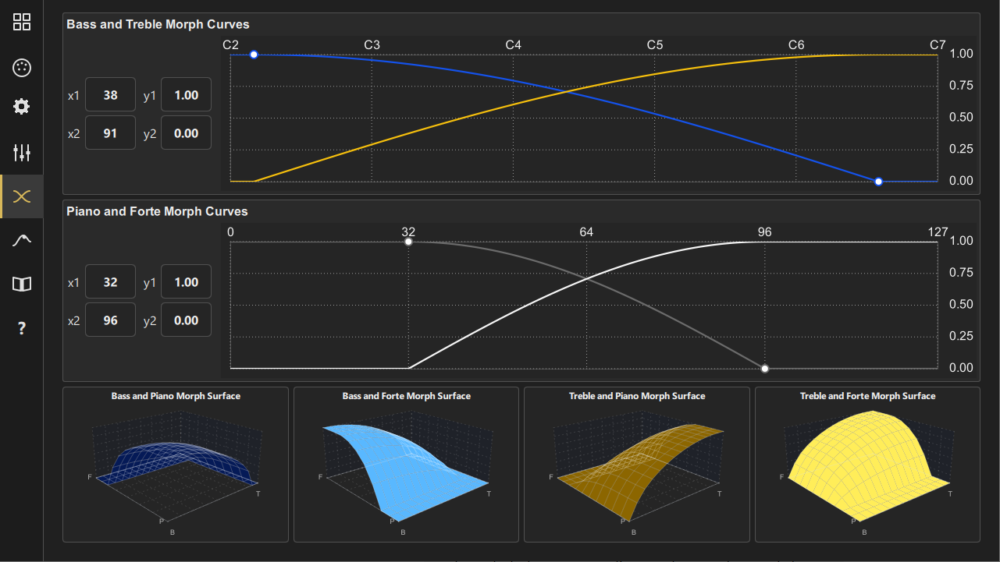
On a phone, only one curve pair is shown at a time. Use the page arrows to switch between Low/High and Soft/Loud.
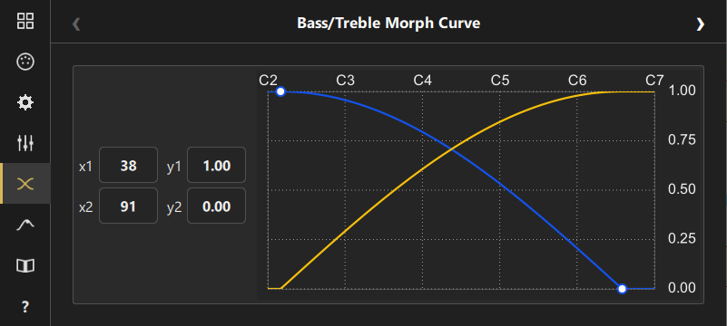
The Morph Monitor uses the same 3×3 arrangement as Morph Output Assignment. The center contains a Keyboard. The eight surrounding panels show the current response of the Morph Outputs.
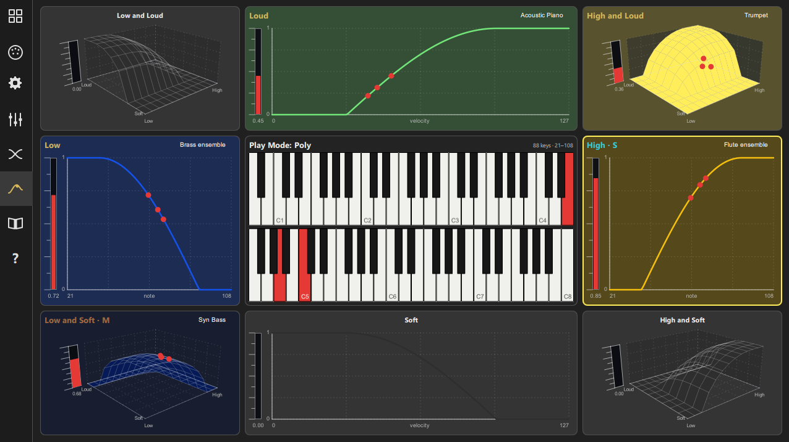
Red points show played notes at their positions on the relevant curve or surface. Each panel also contains a red gain indicator from 0.00 to 1.00. When several notes are active, the displayed Morph Output level follows the maximum current gain for that output.
The keyboard highlights sounding notes in red. Notes outside the configured Keyboard Range appear gray in the fixed 88-key view.
Morph Monitor shows an M or S suffix beside the generic name of every Muted or Soloed Morph Output. Tap the generic name to cycle through Normal, Muted and Soloed without returning to Morph Output Assignment.
Long-press any Morph Monitor panel to open Morph Curves. A side output selects the relevant global curve on phone layouts; a corner output uses both curves.
An adapted range of 49 keys or fewer is displayed on one row; larger ranges use two rows.
The phone layout uses six overlapping pages of 28 notes. Use the arrows in the keyboard header to move between them. The header displays the current MIDI note range.
| Page | MIDI range | Approximate musical range |
|---|---|---|
| 1 | 21–48 | A0–C3 |
| 2 | 33–60 | A1–C4 |
| 3 | 45–72 | A2–C5 |
| 4 | 57–84 | A3–C6 |
| 5 | 69–96 | A4–C7 |
| 6 | 81–108 | A5–C8 |
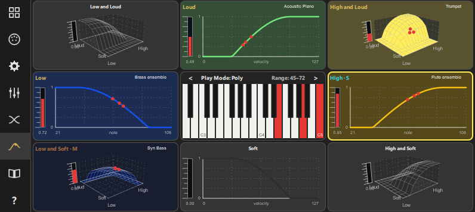
Click or touch a key to generate a test note. Vertical position determines velocity: playing nearer the top of a key produces a lower velocity, while playing nearer the bottom produces a higher velocity. Multitouch permits up to ten simultaneous touch points.
Poly mode allows multiple notes to sound simultaneously. For each output track, Morphora multiplies the incoming Note On velocity by the gain of that track's Morph Output. A note whose resulting velocity is zero is not sent to that track.
Because the gain is applied per Note On, simultaneous notes at different keyboard positions and velocities can produce different blends.
Mono mode uses last-note priority. When a new note is played, the previous sounding note is released and the new note becomes active. Notes that remain physically held are remembered. When the current note is released, the most recently played held note is retriggered.
The retrigger velocity is taken from the Note Off velocity of the released note. If the device sends zero Note Off velocity, Morphora uses 64.
In Mono mode, Morph Output gain is sent as Expression CC11 on each assigned output track, while the Note On velocity itself is preserved.
Incoming sustain pedal data (CC64) is forwarded to assigned, enabled output tracks. Morph Monitor feedback and phrase state retain sustained notes until the pedal is released.
Incoming Pitch Bend data is forwarded to every assigned, enabled output track. Use Pitch Bend Range in Settings to keep the target parts aligned with the controller's intended bend range.
Muted Morph Outputs do not receive notes, sustain, pitch bend, pressure or forwarded controllers. When any Morph Output is Soloed, only the Soloed outputs are enabled. Normal, Muted and Soloed are mutually exclusive states for each Morph Output.
If MIDI input is received while no tracks are assigned to any Morph Output, Morphora displays a temporary banner directing you to Morph Output Assignment or Tracks.
The Manual page displays this HTML document inside Morphora. It is scrollable and supports headings, formatted text, lists, tables, images and captions.
The About page contains the application version, credits, website, contact address, license information and a link that opens the Manual page.
Set the control track to Local Off, or use the equivalent routing option on the input instrument.
Use Channel Soft Reset for the affected output channel. Use GM2 Reset only when a full device reset is appropriate.
Gray keys are outside the selected Keyboard Range. In the fixed 88-key view they remain visible for context but cannot be used as active-range keys.
The following table describes whether messages received on the selected input channel are forwarded to the assigned, enabled output tracks. In this table, “Ignore Preset CCs off” means that the Ignore Preset CCs option is not selected.
| Incoming MIDI message | Forwarded to output tracks |
|---|---|
| Note On | Always |
| Note Off | Always |
| Pitch Bend | Always |
| Polyphonic Key Pressure | Always |
| Channel Pressure | Always |
| Program Change and Bank Select (CC0, CC32) | Never |
| RPN | Never |
| NRPN | Never |
| Sustain (CC64) | Always |
| Expression (CC11) | Only when Ignore Preset CCs is off and Play Mode is Poly. Never in Mono mode. |
| Volume (CC7) | Only when Ignore Preset CCs is off |
| Pan (CC10) | Only when Ignore Preset CCs is off |
| Reverb Send (CC91) | Only when Ignore Preset CCs is off |
| Chorus Send (CC93) | Only when Ignore Preset CCs is off |
| Harmonic Content (CC71) | Only when Ignore Preset CCs is off |
| Brightness (CC74) | Only when Ignore Preset CCs is off |
| Any other Control Change message | Always |
Depending on the current configuration and user actions, Morphora can generate the following messages independently of incoming MIDI data:
Morphora Version 1.0
© 2026 NaadaLab. All rights reserved.